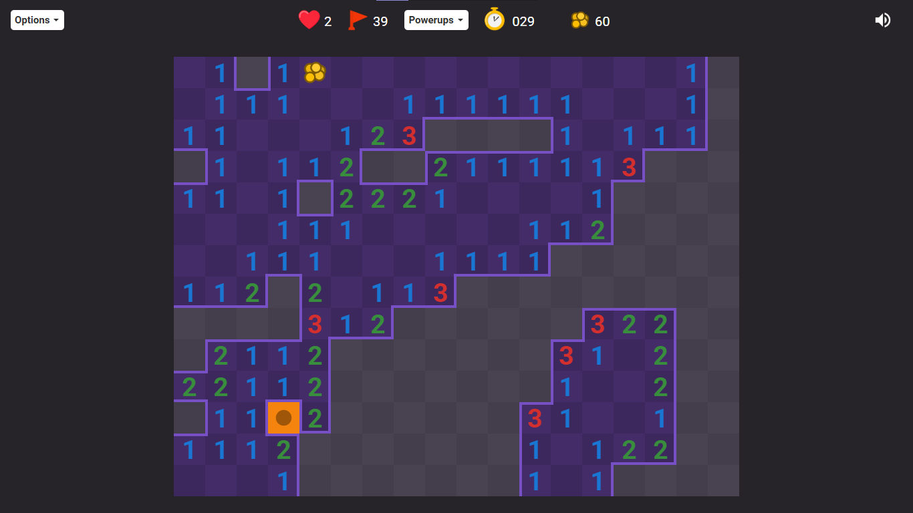

Remember minesweeper? FlowerMineSweeper is a mod of Google Minesweeper, now with:
1. 3 lives!
2. custom board sizes!
3. anti mines and double mines!
4. (in-progress) powerup system!
9. Wait, why did we jump to 9?
10. That's it just play the game here:
Check out the Github repo once you've finished reading this page!